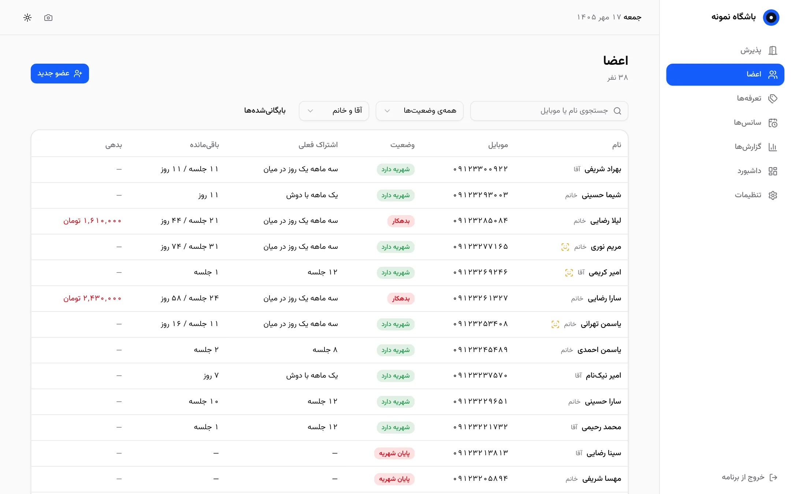

عضو وارد میشود، برنامه خودش میشناسدش
نرمافزار مدیریت باشگاه با حضور و غیاب خودکار از روی چهره. یک وبکم معمولی کنار جاکفشی، ورود و خروج را ثبت میکند و با صدا خوشآمد یا پایان شهریه را اعلام میکند.
ویندوز ۱۰ و ۱۱ · دمو داخل مرورگر اجرا میشود و دادههایش ساختگی است

چطور کار میکند
بدون کارت، بدون اثر انگشت، بدون صف جلوی پذیرش.
یک بار ثبت چهره
موقع عضویت، عضو چند ثانیه جلوی دوربین میایستد. فقط یک بردار عددی ذخیره میشود، نه عکس.
ورود از جلوی جاکفشی
دوربین عضو را میشناسد، ورود ثبت میشود و یک جلسه از اشتراکش کم میشود.
اعلام صوتی
«خوش آمدید»، «پایان شهریه» یا «سانس نامعتبر» پخش میشود. موقع رفتن هم خروج با خداحافظی ثبت میشود.
هر چیزی که پذیرش لازم دارد
طراحیشده برای باشگاههای ایرانی: تقویم شمسی، تومان، سانس آقایان و خانمها.
تشخیص چهرهی محلی
با وبکم معمولی و پردازندهی خود کامپیوتر، بدون کارت گرافیک و بدون اینترنت.
اشتراکهای جلسهای و زمانی
۱۲ جلسه، یک ماهه، ترکیبی، یک روز در میان، با دوش و کمد. پرداخت ناقص بهصورت بدهی ثبت میشود.
اعلام صوتی
صدای مرد یا زن، به انتخاب باشگاه. فقط یک صدا با اولویت: سانس نامعتبر، پایان شهریه، خوش آمدید.
سانسهای هفتگی
سانس آقایان و خانمها با الگوهای آماده. ورود در سانس اشتباه، هشدار قرمز و صدای مخصوص دارد.
گزارش و اکسل
درآمد، ورودها، در حال اتمام، بدهکاران، غایبین و ساعات شلوغی. خروجی اکسل راستبهچپ و خروجی پیامک.
ظاهر مدرن
تم روشن و تاریک با چند رنگ، تقویم شمسی و اعداد فارسی در همهی صفحهها.
نگاهی به برنامه
همهی تصویرها از دموی آنلاین با دادهی ساختگی گرفته شدهاند.




دادهی باشگاه، روی کامپیوتر باشگاه
- هیچ سرور ابری، حساب کاربری یا اشتراک ماهانهای در کار نیست.
- برنامه بعد از نصب بدون اینترنت کار میکند و چیزی به بیرون نمیفرستد.
- به جای عکس عضو، فقط یک بردار عددی از چهره ذخیره میشود.
- دوربین فقط وقتی روشن است که پنجرهی برنامه باز باشد.
- کد کامل روی گیتهاب است و هر کسی میتواند بررسیاش کند.
نصب
- فایل
GymApp-Setup.exeرا از صفحهی دانلود بگیرید و اجرا کنید. - وبکم را جایی بگذارید که صورت افراد را از روبهرو و در نور کافی ببیند، مثلاً بالای جاکفشی.
- برنامه را از میانبر دسکتاپ باز کنید، رمز مدیر را تعیین کنید و تعرفهها را بسازید.
- اعضا را ثبت کنید و چهرهی هر کدام را یک بار بگیرید.
دادهها در C:\ProgramData\GymApp نگهداری میشوند. برای پشتیبانگیری، همین پوشه را کپی کنید.
قبل از نصب، امتحانش کنید
دمو در مرورگر شما اجرا میشود: عضو بسازید، اشتراک بفروشید و با دکمهی «ورود یک عضو» ببینید دم در چه اتفاقی میافتد.